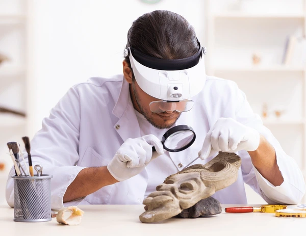

Dr. Raj Malik
Senior Anthropologist
Background
Dr. Raj Malik is an internationally recognized cultural anthropologist whose comparative research on death rituals and oral storytelling traditions has transformed our understanding of how human societies cope with mortality and preserve cultural memory across generations.
Born in Mumbai and raised between India and the United States, Dr. Malik brings a unique cross-cultural perspective to his work. He earned his Ph.D. in Anthropology from the University of California, Berkeley, with a dissertation titled "Narratives of the Afterlife: Comparative Death Beliefs in South Asian and West African Societies."
Research Focus
Dr. Malik's research centers on two interconnected themes: mortuary practices and the role of storytelling in cultural preservation. His extensive fieldwork spans three continents—Asia, Africa, and South America—where he has documented burial customs, funeral rituals, and oral traditions in over 40 distinct cultural communities.
His work is particularly notable for its emphasis on listening to and amplifying the voices of cultural practitioners themselves. Rather than imposing external frameworks, Dr. Malik works collaboratively with community members to understand how they conceptualize death, memory, and the transmission of cultural knowledge.
Fieldwork and Documentation
Over two decades of fieldwork, Dr. Malik has lived with communities in rural India, West Africa, the Amazon Basin, and Southeast Asia. His immersive approach—often spending months at a time embedded in communities—has allowed him to build deep relationships and gain insights that shorter research visits would miss.
He has recorded over 1,000 hours of oral histories, funeral ceremonies, and storytelling sessions, creating an invaluable archive of cultural practices that are rapidly disappearing in the face of globalization and modernization.
Major Contributions
- Published over 40 peer-reviewed articles in leading anthropology journals
- Author of "The Grammar of Grief: Cross-Cultural Perspectives on Death and Mourning" (2017)
- Co-editor of "Voices from the Margins: Preserving Endangered Oral Traditions" (2022)
- Creator of the Digital Archive of Mortuary Practices, a freely accessible online database
- Recipient of the Society for Cultural Anthropology's Career Achievement Award (2023)
Current Work at the Museum
As Senior Anthropologist at the Museum of Cultural Memory, Dr. Malik curates exhibitions that center the voices and perspectives of the communities represented in our collections. He is currently developing an interactive exhibition on global death rituals that will feature video testimonies from cultural practitioners, allowing visitors to hear directly from those who maintain these traditions.
Dr. Malik also leads the museum's Oral History Initiative, which partners with diaspora communities to document and preserve their cultural narratives and practices for future generations.
Teaching and Community Engagement
Dr. Malik is deeply committed to making anthropological knowledge accessible beyond academic circles. He regularly gives public lectures, leads community workshops on cultural preservation, and mentors graduate students from underrepresented backgrounds in anthropology.
Selected Publications
- "Ritual, Memory, and the Social Body: Funeral Practices in Contemporary West Africa" (2015)
- "Storytelling as Resistance: Oral Traditions in Marginalized Communities" (2019)
- "Digital Anthropology and Cultural Heritage: Opportunities and Ethical Challenges" (2021)